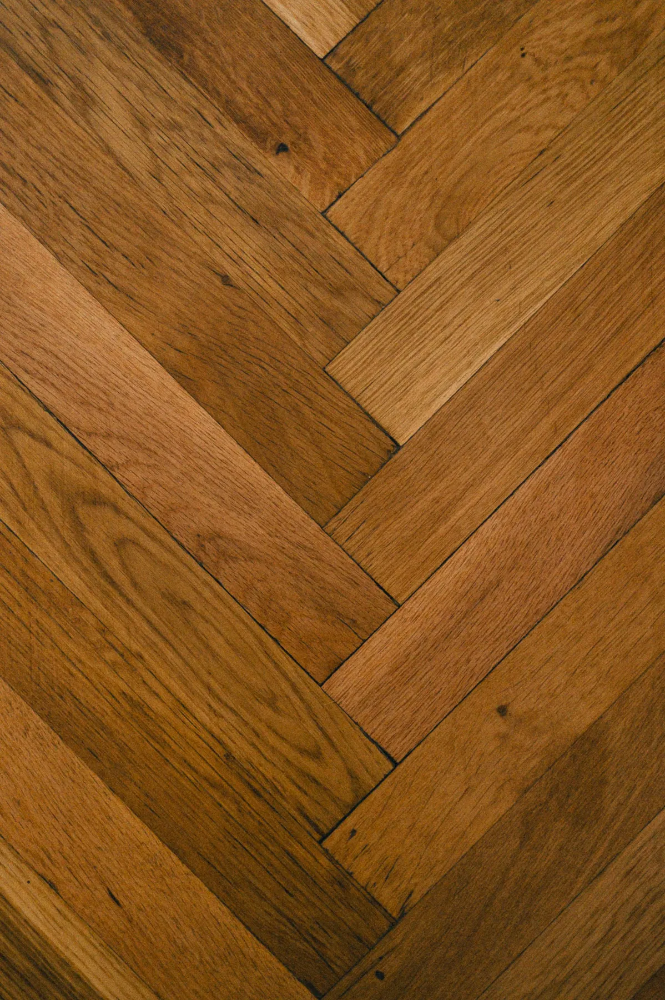
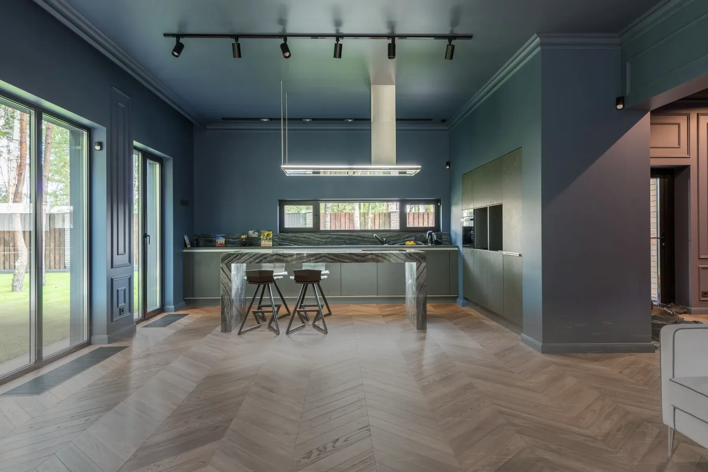
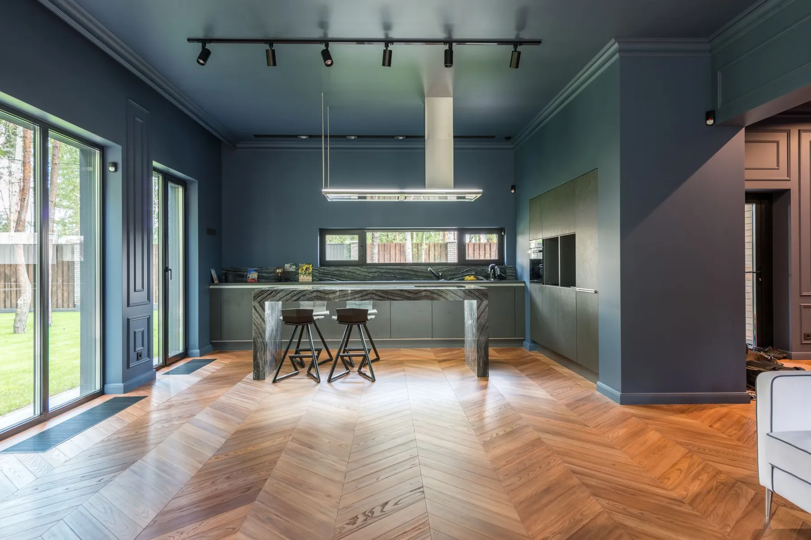
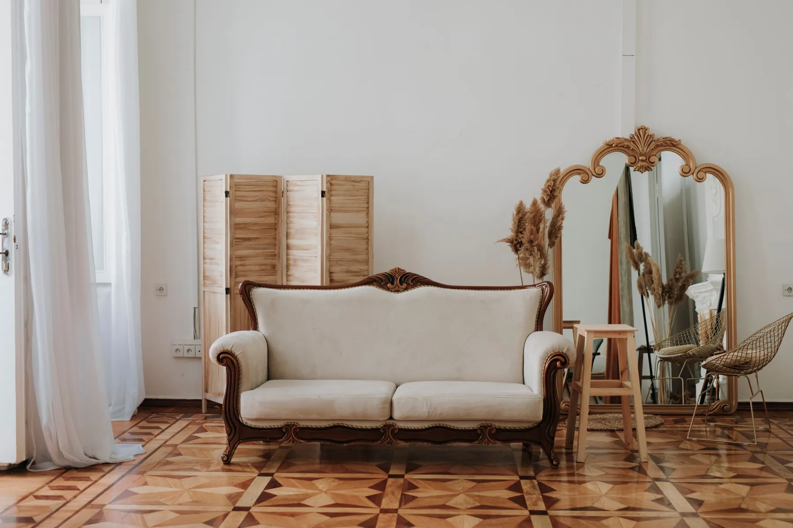
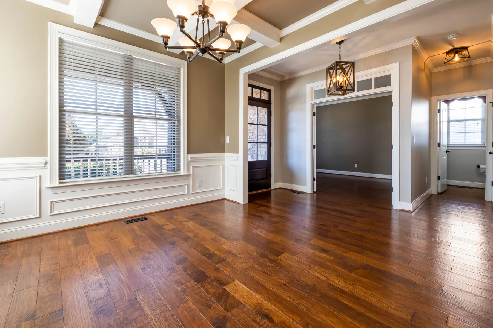
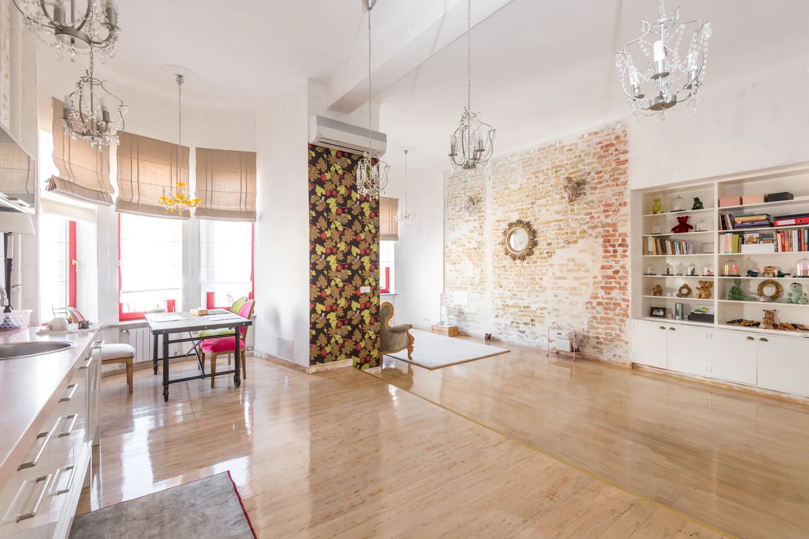
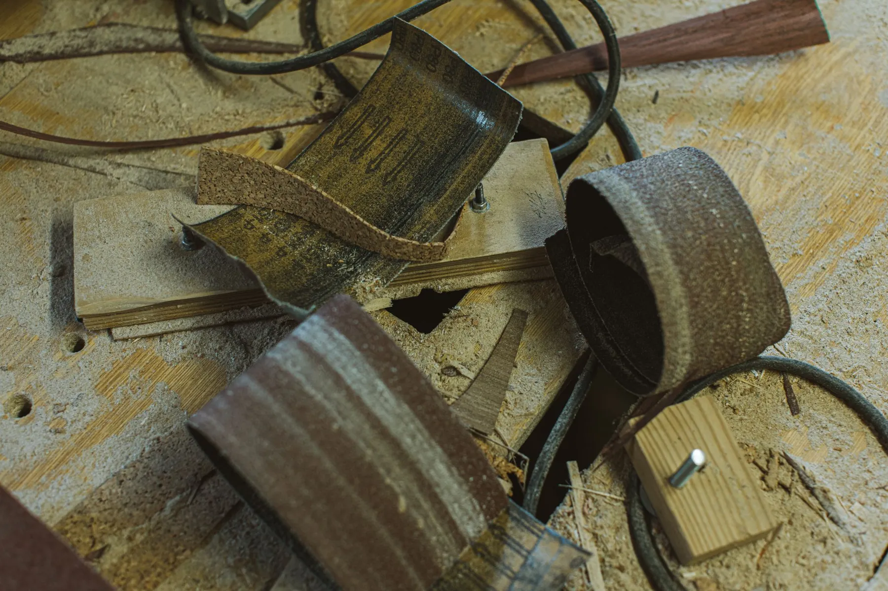
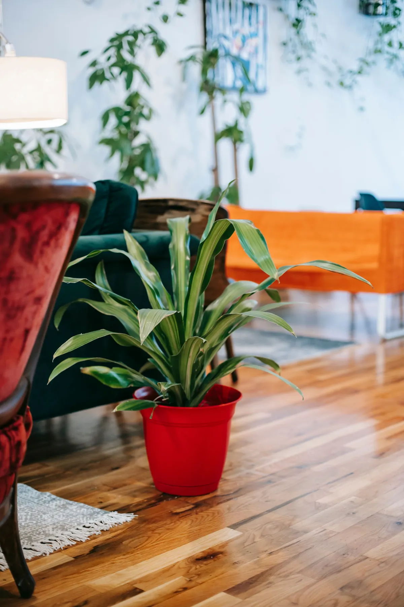

01
Parkett schleifen
Kratzer und Abnutzung werden entfernt, der Boden bekommt wieder eine glatte, saubere Oberfläche.

Parkettfachbetrieb · Hannover & Umgebung
Parkett schleifen, verlegen und renovieren. Sauber, mit modernen Maschinen und einer ehrlichen Beratung vor Ort.
Warum renovieren
Alte Parkettböden müssen nicht ersetzt werden. Durch Schleifen, Ölen oder Lackieren bekommt Ihr Holzboden seinen Charakter zurück - und hält wieder viele Jahre.


Ein Schliff, ein neuer Raum
Illustration
Leistungen
Kratzer und Abnutzung werden entfernt, der Boden bekommt wieder eine glatte, saubere Oberfläche.

Fachgerechtes Verlegen von Parkett und Vinylböden. Präzise, sauber und langlebig.

Renovierung und Aufarbeitung alter Parkettböden, beschädigte Stellen werden ausgebessert.

Schleifen und Aufarbeiten alter Holzdielen - für eine schöne Oberfläche und langen Schutz.
Färben in verschiedenen Farbtönen für eine moderne Optik und Ihren eigenen Stil.

Spachteln, Ausgleichen und Nivellieren für eine perfekte, stabile Verlegung.

Ablauf
Wir sehen uns Ihren Boden vor Ort an und beraten persönlich - ohne Kosten.
Alte Lackschichten und Kratzer werden mit modernen Maschinen abgetragen.
Versiegeln mit 1K- oder 2K-Lack, ölen mit Hartwachsöl oder färben.
Sauber übergeben, mit Pflegehinweisen, damit der Boden lange schön bleibt.
Oberflächen
1K- oder 2K-Lack bildet eine geschlossene, robuste Schutzschicht. Pflegeleicht und strapazierfähig - ideal für Küche, Flur und Familienalltag.
Dringt ins Holz ein und betont Maserung und Struktur. Natürlich, warm und partiell nachpflegbar.
Vom hellen Nordic-Look bis zur dunklen Eiche: Parkett färben für einen ganz eigenen Stil.

Ein Parkettboden kann mehrfach renoviert werden - und bleibt Jahrzehnte schön.
Einsatzgebiet
Gleichmäßiger Schliff, staubarm und präzise.
Lacke und Öle, abgestimmt auf Holz und Nutzung.
Beratung und Besichtigung sind kostenlos.
Kontakt
Beschreiben Sie kurz Ihr Projekt. Wir melden uns schnell bei Ihnen.
0176 2759 6371A-S-S Parkett Hannover
Inhaber Murat Duman
Hans-Böckler-Straße 56, 30853 Langenhagen
ass-parkett-hannover@web.de